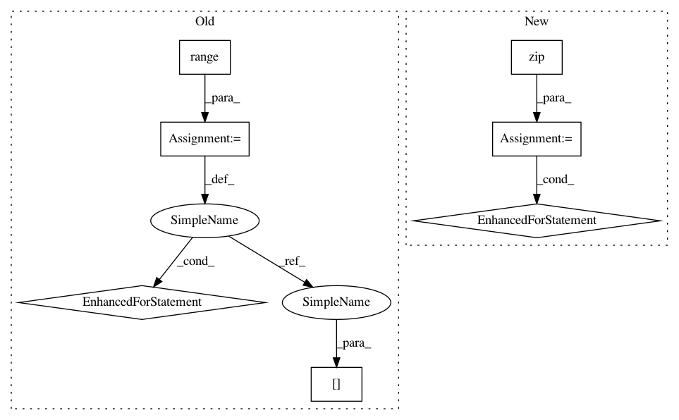

6e6c12425a787d8c954ce5c31ceed59cdd531001,kraken/lib/ctc_decoder.py,,greedy_decoder,#,48
Before Change
m = np.argmax(outputs, 0)
start = None
x = []
for i in range(len(m)):
if start is None and dec[i] != 0 and (not (i > 0 and dec[i-1] == dec[i])):
start = i
code = dec[i]
if start is not None and (dec[i-1] != dec[i]):
x.append((code, start, i , val[start:i+1].max().data[-1]))
start = None
return x
def blank_threshold_decoder(outputs, threshold=0.5):
After Change
seq_len = outputs.shape[1]
mask = np.eye(outputs.shape[0], dtype="bool")[labels].T
classes = []
for label, group in groupby(zip(np.arange(seq_len), labels, outputs[mask]), key=lambda x: x[1]):
group = list(group)
if label != 0:
classes.append((label, group[0][0], group[-1][0], max(x[2] for x in group)))
return classes
def blank_threshold_decoder(outputs, threshold=0.5):
In pattern: SUPERPATTERN
Frequency: 3
Non-data size: 7
Instances
Project Name: mittagessen/kraken
Commit Name: 6e6c12425a787d8c954ce5c31ceed59cdd531001
Time: 2018-05-20
Author: mittagessen@l.unchti.me
File Name: kraken/lib/ctc_decoder.py
Class Name:
Method Name: greedy_decoder
Project Name: mittagessen/kraken
Commit Name: 6e6c12425a787d8c954ce5c31ceed59cdd531001
Time: 2018-05-20
Author: mittagessen@l.unchti.me
File Name: kraken/lib/ctc_decoder.py
Class Name:
Method Name: greedy_decoder
Project Name: nilearn/nilearn
Commit Name: 9b9095f877f603d91495c72f91e4fddf61f1724e
Time: 2019-07-22
Author: jerome@dockes.org
File Name: examples/02_decoding/plot_haxby_stimuli.py
Class Name:
Method Name:
Project Name: scikit-optimize/scikit-optimize
Commit Name: 8f8d6d48c60407fcd741eaa18199b71a3ac7a381
Time: 2017-11-11
Author: franck@sancare.fr
File Name: skopt/searchcv.py
Class Name: BayesSearchCV
Method Name: fit